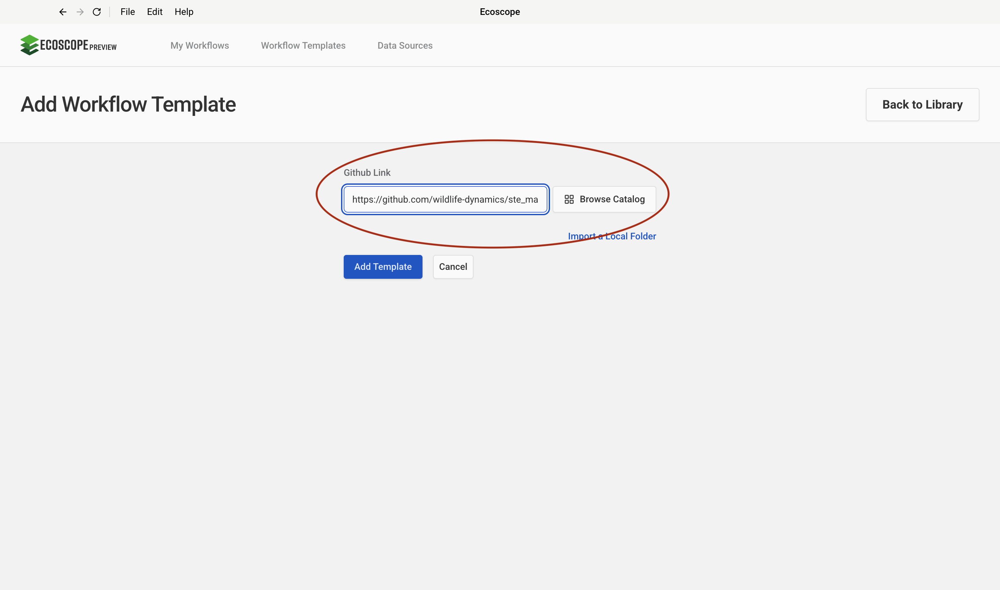
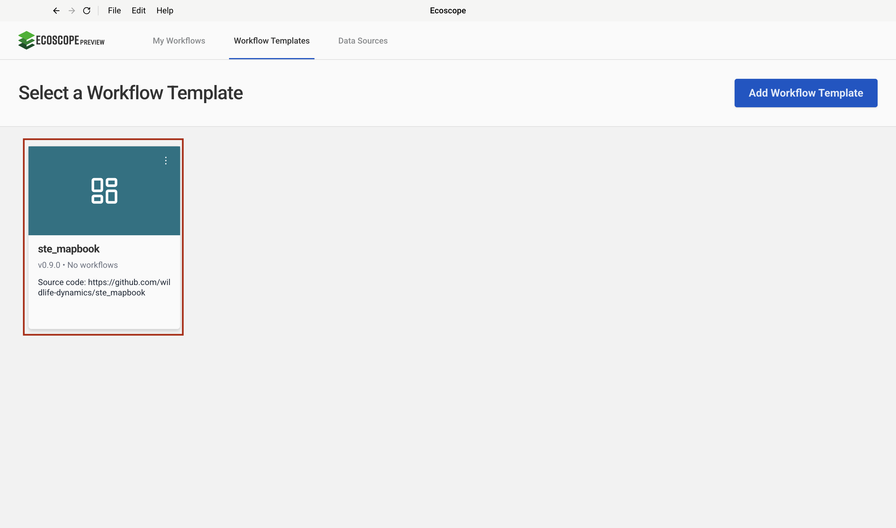
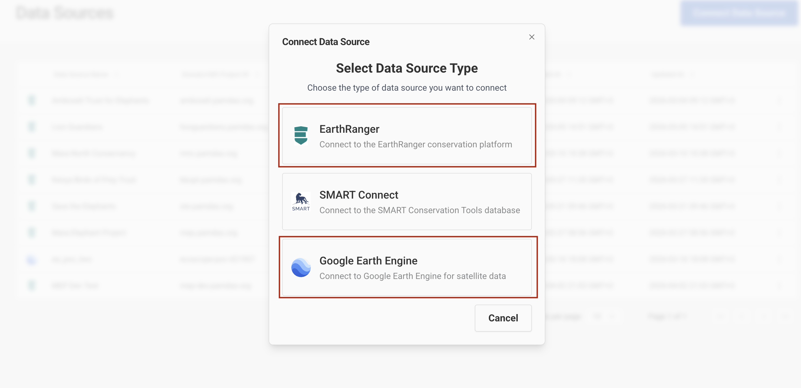
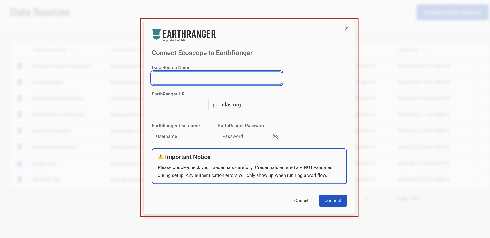
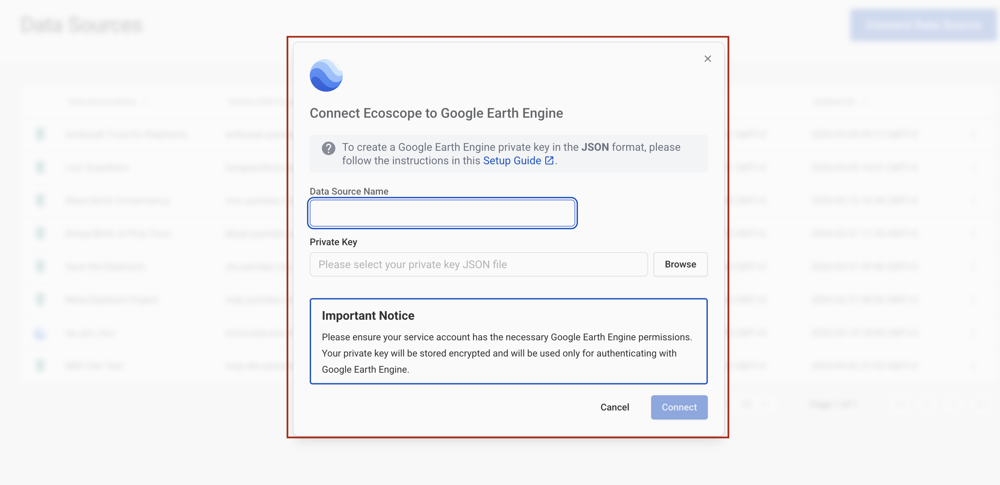
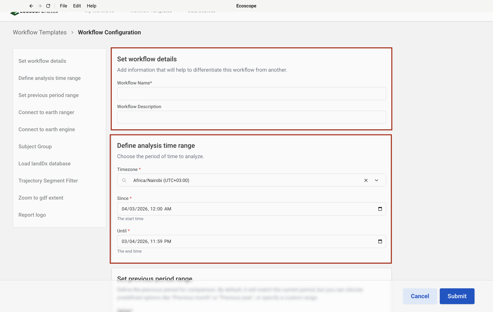
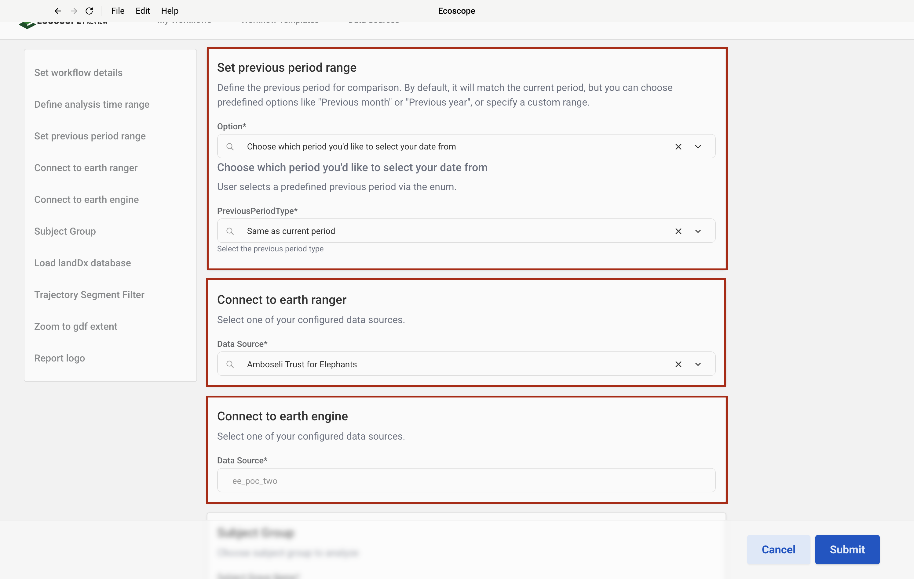
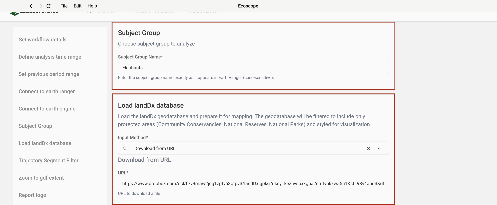
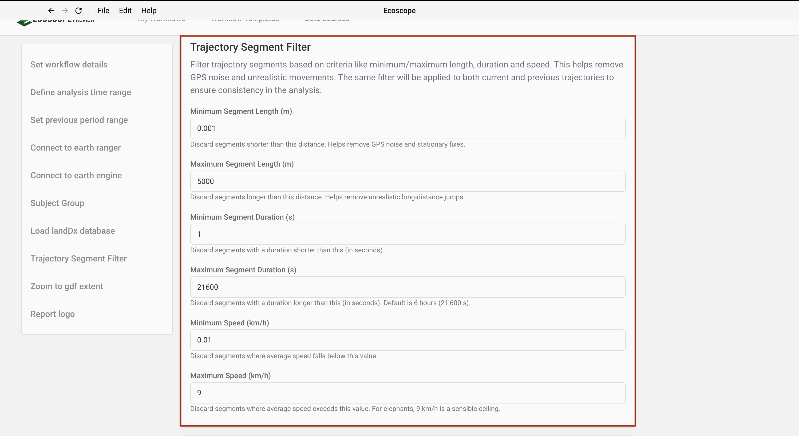
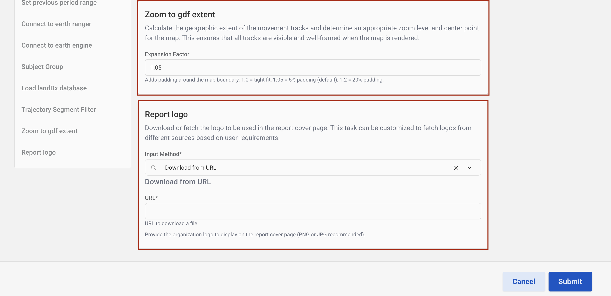

STE Mapbook Workflow — User Guide
This guide walks you through configuring and running the STE Mapbook Workflow, which generates a multi-section mapbook report for wildlife tracking data sourced from EarthRanger and Google Earth Engine.
Overview
The workflow produces, for each tracked subject:
- Six interactive map visualizations (movement tracks, speed, day/night, home range, mean speed raster, seasonal home range)
- A Word document mapbook (
.docx) with a cover page and one section per subject - An interactive widget dashboard
Prerequisites
- Access to an EarthRanger instance with a configured data source
- Access to a Google Earth Engine project
- The
landDxgeodatabase (downloaded automatically from Dropbox by default — no local copy required)
Step-by-Step Configuration
Step 1 — Add the Workflow Template
In the workflow runner, add a new template using the following GitHub repository URL:
https://github.com/wildlife-dynamics/ste_mapbook.git
Step 2 — Select the Template
After adding the template, select it from the available templates list to load the STE Mapbook workflow.

Step 3 — Configure Connections
Both an EarthRanger connection and a Google Earth Engine connection are required for the workflow to run. Configure these before proceeding to the workflow parameters.

Configure EarthRanger Connection
Enter your EarthRanger server URL and authentication credentials to establish the EarthRanger data connection.

Configure Google Earth Engine Connection
Enter your Google Earth Engine project name to establish the GEE connection used for seasonal analysis.

Step 4 — Set the Workflow Time Range
Define the analysis period by setting the Since (start) and Until (end) dates. All movement data, trajectories, and home ranges will be computed within this window.

Step 5 — Set the Previous Period and Connection
Select a previous period to use as a comparison baseline on the Movement Tracks map, and confirm the active data connections.
| Option | Description |
|---|---|
| Same as current period | Mirrors the current period length, ending at the current start date |
| Previous month | Calendar month before the current period |
| Previous 3 months | Three calendar months before the current period |
| Previous 6 months | Six calendar months before the current period |
| Previous year | One calendar year before the current period |
| Enter start date | Manually specify a start date for the previous period |

Step 6 — Select Subject Group
Enter the Subject Group Name exactly as it appears in EarthRanger (case-sensitive). The default value is Elephants.

Step 7 — Configure Map Overlay
Choose the overlay layer to display on all maps. Two options are available:
| Option | Description |
|---|---|
| LandDx | Standard protected area boundaries (community conservancies, national reserves, national parks) downloaded automatically from the provided Dropbox URL — no local copy required |
| EarthRanger Spatial Feature | Fetches a named spatial feature set directly from your connected EarthRanger instance |
By default, the LandDx option is pre-selected and the download URL is filled in — no action is required unless you want to use an EarthRanger spatial feature instead.
Step 8 — Configure Trajectory Segment Filter
These filters remove GPS noise and unrealistic movements before trajectory analysis. The same filter is applied to both the current and previous period trajectories.
| Field | Default | Description |
|---|---|---|
| Minimum Segment Length (m) | 0.001 | Discard segments shorter than this distance |
| Maximum Segment Length (m) | 5000 | Discard segments longer than this distance |
| Minimum Segment Duration (s) | 1 | Discard segments shorter than this duration |
| Maximum Segment Duration (s) | 21600 | Discard segments longer than this duration (6 hours) |
| Minimum Speed (km/h) | 0.01 | Discard segments below this average speed |
| Maximum Speed (km/h) | 9 | Discard segments above this average speed |
Adjust these values to suit the movement characteristics of your study species.

Step 9 — Zoom to GDF Extent and Report Logo
Zoom to GDF Extent
Set the Expansion Factor to control the map padding around the data boundary. A value of 1.0 gives a tight fit; 1.05 (default) adds 5% padding; 1.2 adds 20% padding.
Report Logo
The logo appears on the mapbook cover page. You can either:
- Provide a URL to a PNG or JPG image to download it automatically.
- Provide a local file path to an image on your machine.

Running the Workflow
Once all parameters are configured, submit the workflow. The runner will:
- Pull movement data from EarthRanger for the specified subject group and time range.
- Filter trajectories using the segment filter settings.
- Compute home ranges, speed rasters, and seasonal ranges using Google Earth Engine.
- Generate all map visualizations and the Word mapbook.
- Save all outputs to the directory specified by
ECOSCOPE_WORKFLOWS_RESULTS.
Output Files
All outputs are written to $ECOSCOPE_WORKFLOWS_RESULTS/:
| File | Description |
|---|---|
trajectories.geoparquet | Current period trajectories |
previous_period_trajectories.geoparquet | Previous period trajectories |
relocations.geoparquet | Current period relocations |
previous_period_relocations.geoparquet | Previous period relocations |
*.geoparquet (ETD, MCP, seasonal) | Home range polygons per subject |
*_movement_tracks.html | Interactive movement tracks map per subject |
*_speedmap.html | Interactive speed map per subject |
*_day_night.html | Interactive day/night map per subject |
*_homerange.html | Interactive home range map per subject |
*_mean_speed_raster.html | Interactive mean speed raster per subject |
*_seasonal_home_range.html | Interactive seasonal home range map per subject |
mapbook_context_page.docx | Cover page document |
*.docx (per subject) | Individual subject report sections |
Merged mapbook .docx | Final combined Word report |
Something not working as expected? See Troubleshooting.